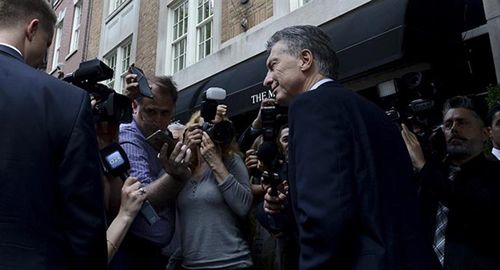

Real Chubut - Agencia de Noticias


Con empresarios, Macri arranca su agenda en Nueva York

El presidente Mauricio Macri participará en Nueva York de la Reunión de Alto Nivel sobre Refugiados y Migrantes, de la reunión anual de la Clinton Global Iniciative y de un seminario organizado por el Financial Times en Wall Street, con el título "La nueva Argentina"; en tanto que por la noche cenará con el titular del Congreso Judío Americano, Jack Rosen.
Las actividades oficiales del mandatario en Nueva York arrancarán hoy con su llegada a las 10.30 hora local (11.30 de Argentina) al Hotel Sheraton Time Square, adonde se desarrollará la reunión anual de la Clinton Global Initiative, de la que participará junto al expresidente estadounidense Bill Clinton; al primer ministro italiano, Matteo Renzi; y al alcalde de Londres, Sadiq Khan.
Allí, dará un mensaje antes presidentes, CEOs de empresas, titulares de fundaciones, ONGs, y representantes de organismos internacionales y de la banca internacional.
En tanto, a las 15 (16 de Argentina), en la sede de Naciones Unidas, está previsto que Macri pronuncie un discurso en el marco del debate general de la Reunión de Alto Nivel sobre Refugiados.
Esa exposición se dará a poco de que el gobierno argentino relanzara el denominado "Programa Siria", con el propósito de favorecer la llegada al país de unos 3 mil refugiados sirios.
Luego de esa participación, el Presidente tiene previsto trasladarse a la Bolsa de Nueva York (a las 17.15, hora de Argentina) para participar y exponer en un evento organizado por el diario Financial Times que lleva como título "la nueva Argentina", antes de lo cual se reunirá con la junta directiva de la Bolsa y con CEOs de empresas de tecnología.
Tras esas actividades, el mandatario regresará al hotel en el que se hospeda junto a su comitiva, el hotel The Mark, y, desde allí, partirá luego hacia la residencia particular del titular del Congreso Judío Americano, Jack Rosen, con quien compartirá una cena de la que participarán también su esposa, Juliana Awada; el jefe de Gabinete, Marcos Peña; el secretario de Asuntos Estratégicos, Fulvio Pompeo; y el embajador argentino Martín Lousteau.
Ayer, tras su llegada a Nueva York, Mauricio Macri afirmó que llevará el reclamo argentino de soberanía sobre las Islas Malvinas a las Naciones Unidas y dejó claro que se trata de un "reclamo permanente y no negociable para todos los argentinos".
En tanto, mañana, el mandatario dará su primer discurso ante la Asamblea General de las Naciones Unidas, adonde mostrará al mundo una Argentina que tiene la vocación de "trabajar en conjunto" y "ser parte de los desafíos globales", según adelantó.
La agenda de mañana del Presidente en Nueva York comenzará a las 8 (9 de Argentina), con su presencia en la ceremonia de bienvenida a los jefes de Estado y de Gobierno en la sede de la ONU y desde las 9 (10 de Argentina) estará ocupando su lugar en la sala de la Asamblea General, donde cerca de las 11.30 hora de Nueva York (12.30 de Argentina) se prevé que dará su mensaje al plenario en séptimo lugar, después del representante de Qatar y antes del de Eslovaquia.
Para las 13 hora de Nueva York está organizado un almuerzo que los mandatarios compartirán con el secretario general de las Naciones Unidas, Ban Ki-Moon, que este año se despedirá de la función, en el Salón de Delegados Norte del complejo de Naciones Unidas.
Sobre las 15, Macri tendrá una reunión con su par de Ucrania, Petró Poroshenko, y a continuación tomará parte de la convocatoria del jefe de Estado estadounidense, Barack Obama, bajo la consigna de Cumbre de Líderes sobre refugiados, con foco en la situación siria.
Para las 19, está prevista la participación de Macri y su esposa en la recepción que Obama brindará en el Lotett New York Palace Hotel.
El miércoles, que será el último día de Macri en Nueva York, tendrá en su agenda cita a las 8 en la reunión de Alto Nivel sobre la entrada en vigor del "Acuerdo de París" en la Sala de la Asamblea General.
Posteriormente, desde las 9, el Presidente mantendrá una serie de reuniones en el hotel donde se hospeda, con punto de partida en el titular ejecutivo del Foro Económico Mundial, Klaus Schwab, y luego, sucesivamente, el representante de Exxon Rex Tillerson (9.45), una representación de la comunidad judía (10), la vicepresidenta de Aes Corporation Scarlet Alvarez (10.45) y el CEO de We Work (10.30), para cerrar su agenda en Nueva York con una ronda de prensa.